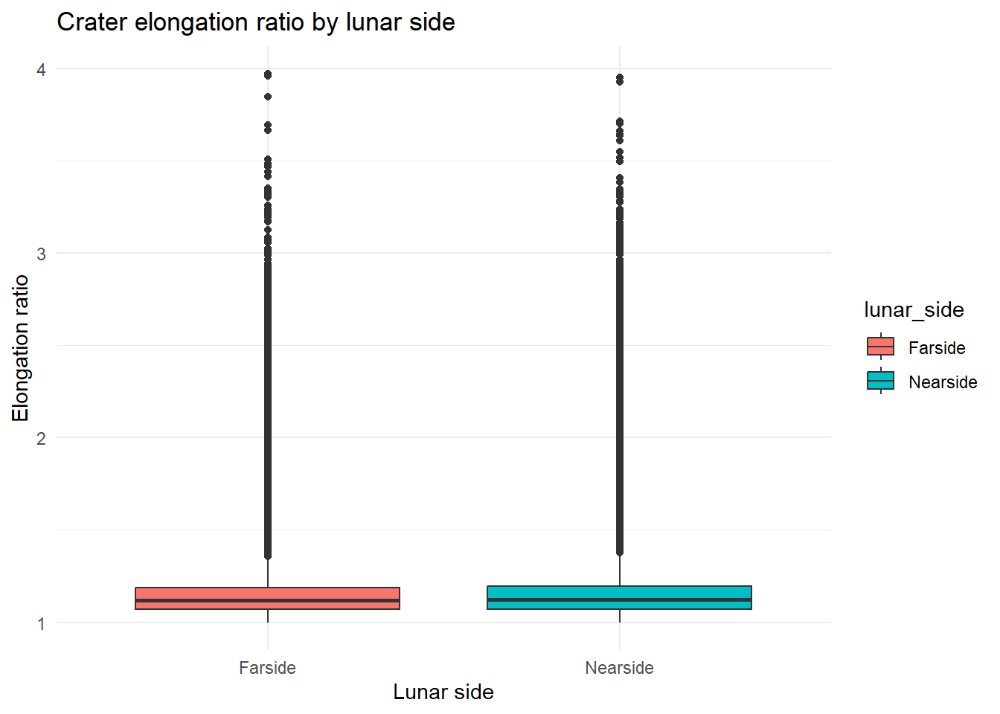
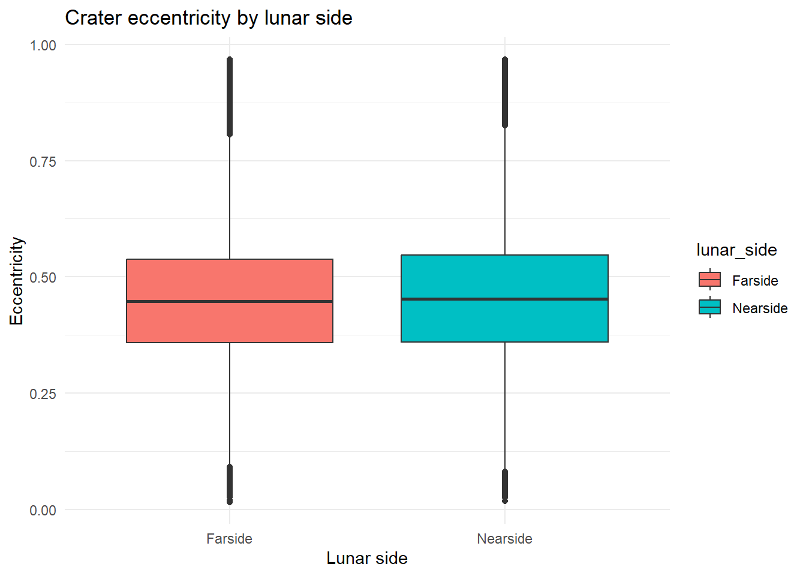
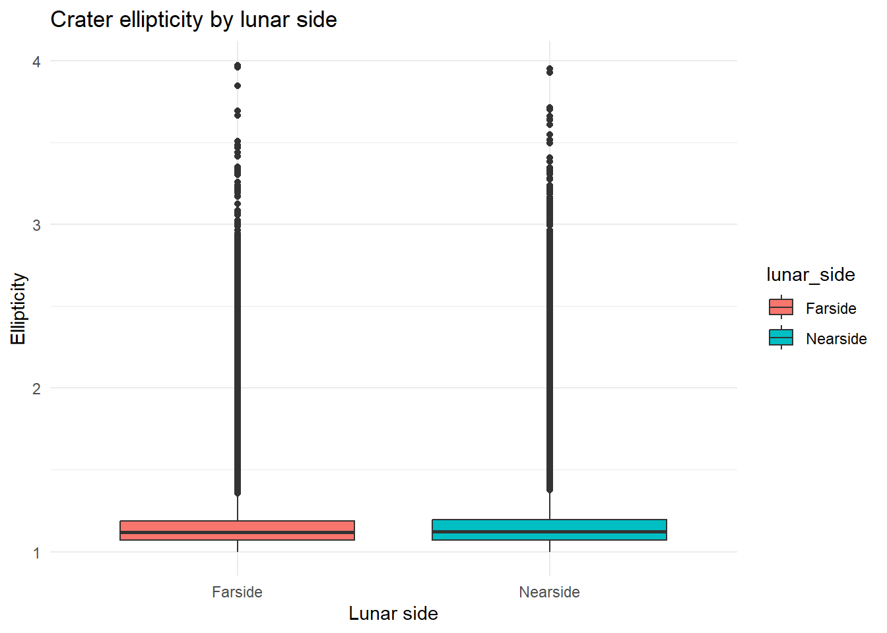
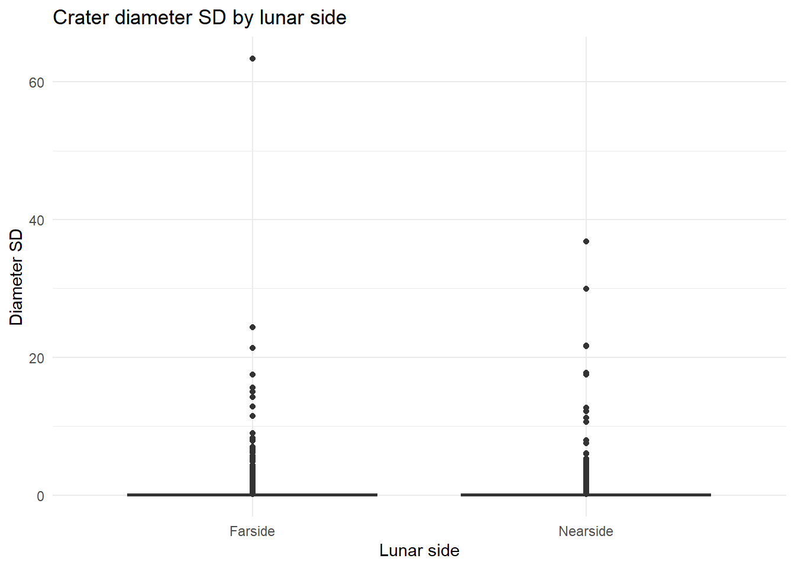
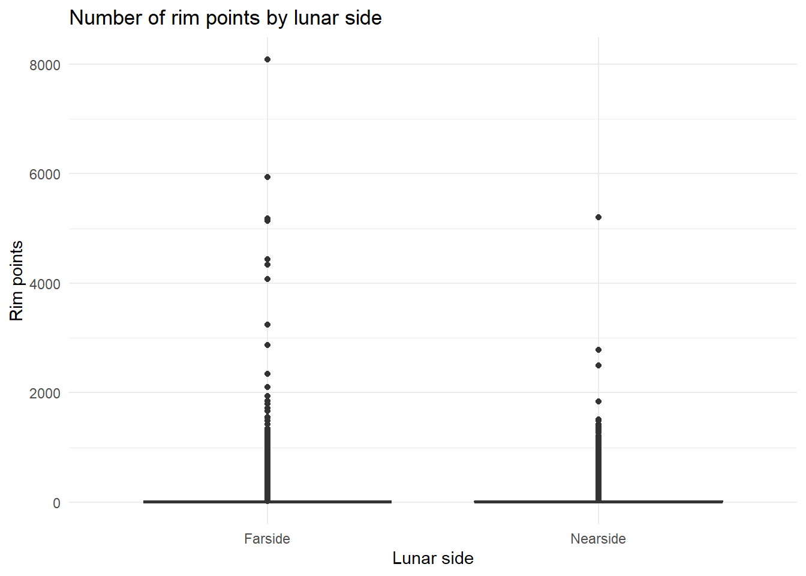
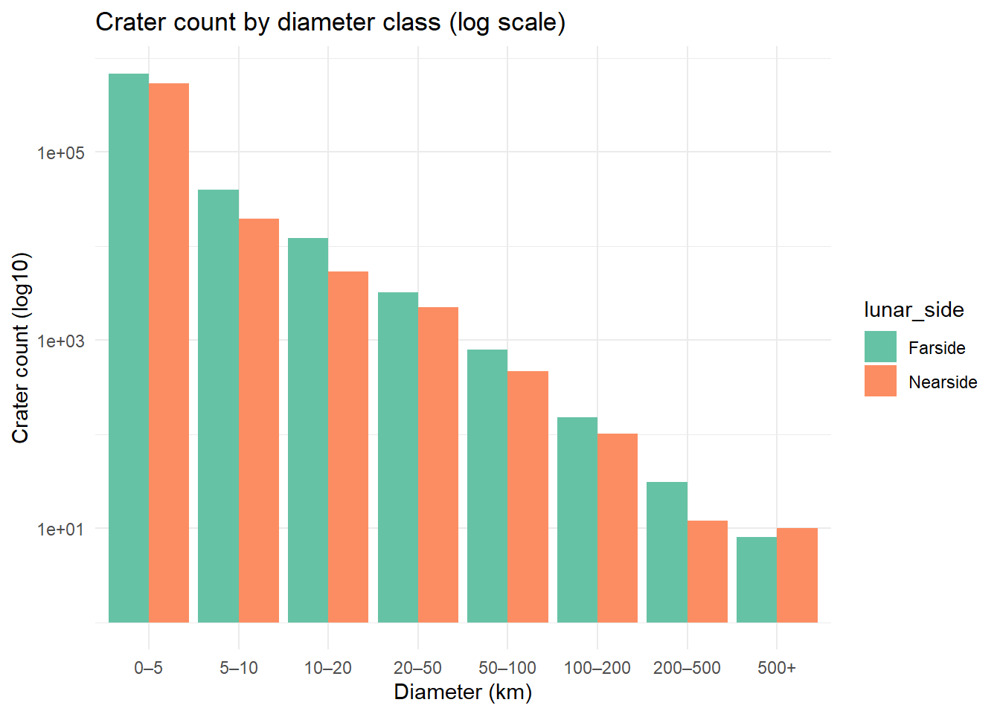
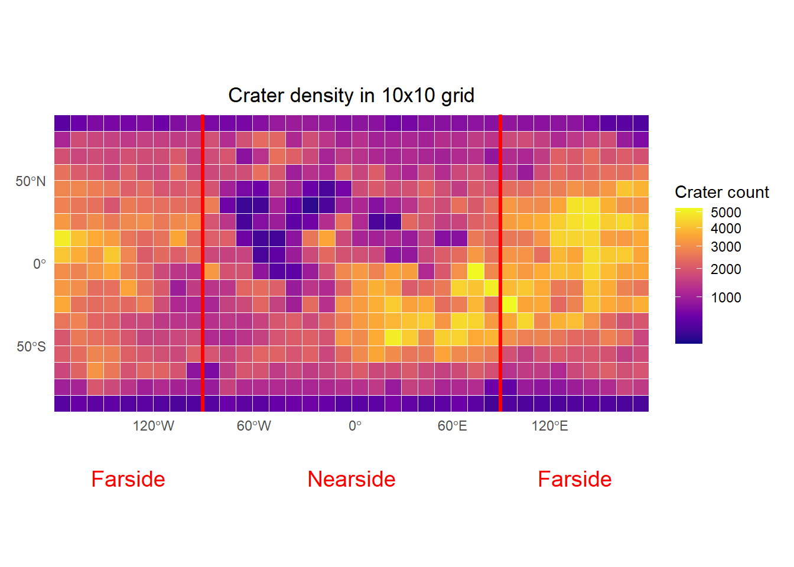

Analysis of lunar craters looking at the far- and nearside
Author
Nadegger Florian
Usage of AI
A short note regarding the usage of AI in the course of the implementation: I used (or rather, tried to use) Github Copilot. I started writing the code and discussed the solutions with Copilot. Sometimes I would get some nice improvements and quick solutions (for example changing the scale of the crater count to a log10 scale), but most of the time I got very bad code and a complete destruction of the output. I also used it to figure out errors, which is why I added the sf_use_s2(FALSE) for example, as I experienced problems with data somewhere and this was a nice and quick solution. Also the conversion from planar to spatial and from spatial to planar was a suggestion of Copilot, as it could potentially invalidate the result of the analysis. The biggest “chunk” I used AI for was suggestions of the analysis I could do. I discussed the metrics used in common literature and gave the ones I have available in the moon crater DB as input.
Setup
This section loads the required R libraries for data manipulation, spatial analysis, and plotting.
# load all required libraries and disable s2library(tidyverse)
── Attaching core tidyverse packages ──────────────────────── tidyverse 2.0.0 ──
✔ dplyr 1.1.4 ✔ readr 2.1.5
✔ forcats 1.0.0 ✔ stringr 1.5.1
✔ ggplot2 3.5.1 ✔ tibble 3.2.1
✔ lubridate 1.9.4 ✔ tidyr 1.3.1
✔ purrr 1.0.4
── Conflicts ────────────────────────────────────────── tidyverse_conflicts() ──
✖ dplyr::filter() masks stats::filter()
✖ dplyr::lag() masks stats::lag()
ℹ Use the conflicted package (<http://conflicted.r-lib.org/>) to force all conflicts to become errors
library(curl)
Using libcurl 8.10.1 with Schannel
Attaching package: 'curl'
The following object is masked from 'package:readr':
parse_date
library(sf)
Linking to GEOS 3.13.0, GDAL 3.10.1, PROJ 9.5.1; sf_use_s2() is TRUE
library(dplyr)library(readr)library(spdep)
Loading required package: spData
To access larger datasets in this package, install the spDataLarge
package with: `install.packages('spDataLarge',
repos='https://nowosad.github.io/drat/', type='source')`
# Disable spherical geometry calculations because I experienced some problems with the dataset.sf_use_s2(FALSE)
Spherical geometry (s2) switched off
Load and prepare data
We load the USGS lunar crater CSV and prepare the data for analysis. Longitude values are adjusted to a -180° to 180° range and each crater is classified as near- or farside, based on longitude.
We calculate key morphometric metrics for each crater, including diameter, elongation ratio, eccentricity, ellipticity, diameter standard deviation, rim arc length, and number of rim points. These metrics help compare crater shapes and measurement quality between lunar hemispheres.
# calculate different shape and quality metrics for the craterscraters_sf <- craters_sf %>%mutate(elongation_ratio = DIAM_ELLI_MAJOR_IMG / DIAM_ELLI_MINOR_IMG,eccentricity = DIAM_ELLI_ECCEN_IMG,ellipticity = DIAM_ELLI_ELLIP_IMG,diameter_sd = DIAM_CIRC_SD_IMG,rim_arc = ARC_IMG,rim_points = PTS_RIM_IMG)# group craters by near- and farside for comparisonmorpho_stats <- craters_sf %>%st_drop_geometry() %>%group_by(lunar_side) %>%# calculate average morphometric valuessummarise(mean_diameter =mean(DIAM_CIRC_IMG, na.rm =TRUE),median_diameter =median(DIAM_CIRC_IMG, na.rm =TRUE),mean_elongation =mean(elongation_ratio, na.rm =TRUE),mean_eccentricity =mean(eccentricity, na.rm =TRUE),mean_ellipticity =mean(ellipticity, na.rm =TRUE),mean_diameter_sd =mean(diameter_sd, na.rm =TRUE),mean_rim_arc =mean(rim_arc, na.rm =TRUE),mean_rim_points =mean(rim_points, na.rm =TRUE))print(morpho_stats, width =Inf)
The summary table shows that diameter related metrics are higher on the lunar farside, indicating larger craters there. However, shape and measurement quality metrics are slightly higher on the nearside. Overall, these subtle differences suggest similar geological processes across the lunar surface.
Visualize morphometric metrics
We visualize the distribution of morphometric metrics by lunar side using boxplots. This helps identify differences in crater shapes and measurement quality between hemispheres.
# create elongation plotggplot(filter(craters_sf, is.finite(elongation_ratio)),aes(x = lunar_side, y = elongation_ratio, fill = lunar_side)) +geom_boxplot() +# use minimal themetheme_minimal() +labs(title ="Crater elongation ratio by lunar side", x ="Lunar side", y ="Elongation ratio")

# create the eccentricity plotggplot(filter(craters_sf, is.finite(eccentricity)),aes(x = lunar_side, y = eccentricity, fill = lunar_side)) +geom_boxplot() +theme_minimal() +labs(title ="Crater eccentricity by lunar side", x ="Lunar side", y ="Eccentricity")

# create the ellipticity plotggplot(filter(craters_sf, is.finite(ellipticity)),aes(x = lunar_side, y = ellipticity, fill = lunar_side)) +geom_boxplot() +# use minimal themetheme_minimal() +labs(title ="Crater ellipticity by lunar side", x ="Lunar side", y ="Ellipticity")

# create the diameter/standard deviation plotggplot(filter(craters_sf, is.finite(diameter_sd)),aes(x = lunar_side, y = diameter_sd)) +geom_boxplot() +# use minimal themetheme_minimal() +labs(title ="Crater diameter SD by lunar side", x ="Lunar side", y ="Diameter SD")

# create the rim points plotggplot(filter(craters_sf, is.finite(rim_points)),aes(x = lunar_side, y = rim_points)) +geom_boxplot() +# use minimal themetheme_minimal() +labs(title ="Number of rim points by lunar side", x ="Lunar side", y ="Rim points")

The boxplots confirm the similarity of the morphometric properties between the lunar near- and farside as expected in the analysis before. Most craters are close to being circular (elongation ratio and ellipticity near 1) and the spread of eccentricity is similar for both sides. Measurement uncertainty (diameter SD) and the number of rim points also show similar distributions with a few outliers present on both sides. These results indicate that crater formation and preservation processes are consistent for both hemispheres and that the database provides uniform measurement quality for both sides.
Crater size classification and distribution
Crater diameters are classified into size bins. We visualize the frequency of each size class by lunar side to compare the distribution of crater sizes on a log scale.
# classify craters into size bins to make the bar chart readablecraters_sf <- craters_sf %>%mutate(size_class =cut( DIAM_CIRC_IMG,breaks =c(0, 5, 10, 20, 50, 100, 200, 500, 3000),labels =c("0–5", "5–10", "10–20", "20–50", "50–100", "100–200", "200–500", "500+"),right =FALSE))# create the bar plotggplot(craters_sf, aes(x = size_class, fill = lunar_side)) +geom_bar(position ="dodge") +# use a log10 scale for better comparison between binsscale_y_log10() +# use minimal themetheme_minimal() +labs(title ="Crater count by diameter class (log scale)",x ="Diameter (km)",y ="Crater count (log10)") +scale_fill_brewer(palette ="Set2")

Both hemispheres show a clear dominance of smaller craters (0-5 km) with crater counts rapidly decreasing as the diameter increases. The distributions for both sides are similar in shape, indicating that the lunar near- and farside have probably experienced comparable impact populations and surface processes.
However, examining absolute crater counts reveals notable differences. Compared to the nearside, the farside consistently contains higher crater counts across almost all diameter classes. This trend suggests that the farside experiences conditions more favorable for crater preservation. A reason for this could be reduced geological activities such as volcanic resurfacing, which is known to erase or “fill up” smaller craters - which might have happened mainly on the nearside. This observation reinforces existing hypotheses about the distinct geological histories between the two lunar hemispheres.
# group craters by size and lunar side to count themsummary_table <- craters_sf %>%st_drop_geometry() %>%group_by(size_class, lunar_side) %>%# count how many craters are in each groupsummarise(crater_count =n(), .groups ="drop") %>%# reshape data so nearside and farside are columnspivot_wider(names_from = lunar_side,values_from = crater_count,values_fill =0) %>%arrange(size_class)summary_table
We aggregate crater counts into a regular 10x10° grid to analyze spatial density patterns across the lunar surface.
# define a bounding box for the whole moonbbox <-st_bbox(c(xmin =-180, xmax =180, ymin =-90, ymax =90), crs =st_crs(craters_sf))# create a regular grid consisting of 10x10 degree polygonsgrid <-st_make_grid(st_as_sfc(bbox), cellsize =c(10, 10), what ="polygons")# convert the grid to an sf object with IDsgrid_sf <-st_sf(grid_id =seq_along(grid), geometry = grid, crs =st_crs(craters_sf))craters_proj <-st_transform(craters_sf, crs =3857)grid_proj <-st_transform(grid_sf, crs =3857)# join each crater to the grid cell it falls intocraters_joined <-st_join(craters_proj, grid_proj, join = st_within)# count how many craters fall into each grid cellgrid_with_counts <- craters_joined %>%st_drop_geometry() %>%group_by(grid_id) %>%summarise(count =n(), .groups ="drop") %>%left_join(grid_sf, by ="grid_id") %>%st_as_sf() %>%mutate(count =replace_na(count, 0))
Crater density map
We visualize the spatial density of craters using the grid counts. This map highlights regions of high and low crater density and marks the near- and farside boundary.
# create the plotggplot(grid_with_counts) +# draw each grid cell filled by crater countgeom_sf(aes(fill = count), color ="white") +# use viridis color palette with square-root transformationscale_fill_viridis_c(option ="C", trans ="sqrt") +# add red vertical lines to mark the hemisphere boundarygeom_vline(xintercept =c(-90, 90), color ="red", linewidth =1.2) +# annotate the map with hemisphere labelsannotate("text", x =-135, y =-130, label ="Farside", color ="red", size =5) +annotate("text", x =0, y =-130, label ="Nearside", color ="red", size =5) +annotate("text", x =135, y =-130, label ="Farside", color ="red", size =5) +# crop and fix layoutcoord_sf(ylim =c(-90, 90), xlim =c(-180, 180), expand =FALSE, clip ="off") +# use minimal themetheme_minimal() +theme(plot.margin =margin(t =10, r =10, b =40, l =10),plot.title =element_text(hjust =0.5)) +labs(title ="Crater density in 10x10 grid",fill ="Crater count",x =NULL,y =NULL)

The crater density map shows the spatial distribution of craters across the lunar surface, displayed in a 10x10 grid. The near- and farside boundary is marked in red. Regions of higher crater density are visible in near- and farside with some spatial variation and a trend of the farside being more densely cratered.
Calculate Local Moran’s I on crater density (5x5 grid)
To detect spatial clustering, we calculate Local Moran’s I statistics for crater density using a 5x5 grid. This identifies regions where crater counts are significantly clustered.
# create a finer 5x5 degree gridgrid5 <-st_make_grid(st_as_sfc(bbox), cellsize =c(5, 5), what ="polygons")# convert the grid to an sf object with IDsgrid5_sf <-st_sf(grid_id =seq_along(grid5), geometry = grid5, crs =st_crs(craters_sf))grid5_proj <-st_transform(grid5_sf, crs =3857)craters_proj <-st_transform(craters_sf, crs =3857)# join craters to this finer gridcraters_joined5 <-st_join(craters_proj, grid5_proj, join = st_within)# count craters per grid cellgrid5_with_counts <- craters_joined5 %>%st_drop_geometry() %>%group_by(grid_id) %>%summarise(count =n(), .groups ="drop") %>%left_join(grid5_sf, by ="grid_id") %>%st_as_sf() %>%mutate(count =replace_na(count, 0))# transform to projected CRS to prepare for spatial analysisgrid5_projected <-st_transform(grid5_with_counts, crs =3857) %>%filter(count >0) %>%st_make_valid() %>%filter(!st_is_empty(geometry))# calculate neighbor relationshipsnb5 <-poly2nb(grid5_projected)# convert neighbor object into spatial weightslistw5 <-nb2listw(nb5, style ="W")# log-transform crater countscrater_counts_log5 <-log1p(grid5_projected$count)# run Local Moran’s I testlocal_moran5 <-localmoran(crater_counts_log5, listw5)# add the results to the spatial dataframegrid5_projected$local_moran_I <- local_moran5[, 1]grid5_projected$local_moran_p <- local_moran5[, 5]# calculate centroids in planar CRS (EPSG:3857)grid5_projected <- grid5_projected %>%mutate(centroid =st_centroid(geometry))# transform both geometries and centroids back to display them latergrid5_spatial <- grid5_projected %>%mutate(geometry =st_transform(geometry, 4326),centroid =st_transform(centroid, 4326))# extract longitude from centroidgrid5_spatial <- grid5_spatial %>%mutate(long_center =st_coordinates(centroid)[, 1],side =ifelse(long_center >=-90& long_center <=90, "Nearside", "Farside"))
Visualizing Local Moran’s I
We plot the Local Moran’s I values and highlight statistically significant clusters, revealing spatial patterns in crater density.
ggplot(grid5_spatial) +# fill with Moran's I valuesgeom_sf(aes(fill = local_moran_I), color =NA) +# color scale using viridis and a better stretchscale_fill_viridis_c(option ="B") +# add red vertical lines to mark the hemisphere boundarygeom_vline(xintercept =c(-90, 90), color ="red", linewidth =1.2) +# annotate the map with hemisphere labelsannotate("text", x =-135, y =-130, label ="Farside", color ="red", size =5) +annotate("text", x =0, y =-130, label ="Nearside", color ="red", size =5) +annotate("text", x =135, y =-130, label ="Farside", color ="red", size =5) +# crop and fix layoutcoord_sf(ylim =c(-90, 90), xlim =c(-180, 180), expand =FALSE, clip ="off") +# use minimal themetheme_minimal() +theme(plot.margin =margin(t =10, r =10, b =40, l =10),plot.title =element_text(hjust =0.5) ) +labs(title ="Local Moran's I (5x5 grid and a log scale)",fill ="I value",x =NULL,y =NULL )